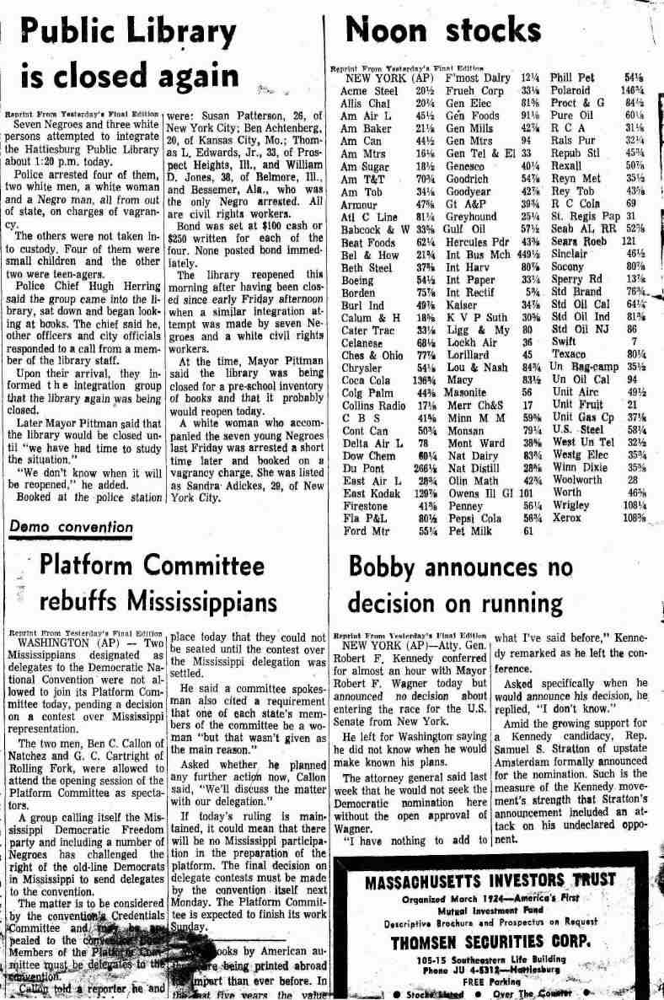

|
TOPICS My blog e-mail me | other personal autobiography political activities mississippi freedom summer (1964) Hattiesburg, MS, newspaper Aug. 18 1964 Front page, upper left
Vietnam problem "baffling" Front page, upper right Sports "Red China and Cuba urge Negroes to Riot" Current movies Hattiesburg library closed "again" Some comic strips Review of "My Three Sons" Some local classifieds Negro doctor appeals conviction; Negro obituaries COFO worker attacked $2500 bail set for accused Negro murderer Women's page part 1 114-year-old slave still alive Women's page part 2 Letter to editor supporting summer project "for the feminine fare" Editorial against summer project Back to Mississippi Freedom Summer page Back to Other personal autobiography page |
| February, 2008 I doubt that the date of this paper, the Hattiesburg American, is significant. Most likely, I just wanted a sample of the local paper, which includes several stories about Negroes. (It was not until the fall, after this project--and in response to it--that movement activisits promoted "black" as the preferred adjective and noun. It would be interesting to know when this paper switched to "Negro" from--presumably--"colored.") The paper is often badly damaged where I folded it 43 years ago. I have scanned (sometimes not well; and my scanner could only fit 1/4 of a page at a time) a number of page sections to suggest both the general cultural context for the paper and specific editorial approaches to coverage of the civil rights movement and black people. You might want to contrast this content with that of a SNCC paper dated a day later. Top left-hand side of front page. Top of page While the lead story about the Democratic Party platform is hardly surprising, attention to New York's senatorial race is curious. Keating is on the one hand an anti-Goldwater Republican (remember that Goldwater ran that year against LBJ) and on the other the incumbent when Robert Kennedy (pioneering a tradition picked up by Hillary Clinton), presumably hated through most of the white South, ran for Senator from NY. Top of page The headline on the lower left speaks for itself. Top of page I remember these attempts to integrate the local library. They seemed like a good idea. But when at the end of the project we reviewed the summer activities, I also remember the library events as an example of criticism from local activists that northern participants (not necessarily white, though perhaps more white than black) were too quick to spearhead controversial activities that local residents would have to deal with when the project had packed up and gone. Note the follow-up story on the lower right about RFK's possibly running for the NY Senate seat. Top of page Notice all the local, mainstream concerns on this page: DAR meeting, Christian talks, the Masons, the departure of Louisiana visitors, report on a Kiwanis club meeting. Then there's the hard-hitting AP column about the filming of a TV program popular throughout the country. (Notice that the header for that story still refers to radio--and puts it first--as well as TV. Top of page Only at the end of the upper left story do we learn that the doctor is head of the Biloxi NAACP. The account of this event makes my blood boil even today. A separate obituary column for "Negro deaths" suggests how segregation policies reached into tiny cultural niches (though it would be interesting to learn whether such a column existed before the rise of the civil rights movement or was added in response). Then we have news about dissension facing the Democratic National Convention, and a news report, separated from the sports page, about the end of Paul Hornung's suspension (without a reminder that it resulted from gambling). Top of page Upper left: Black-on-black violence (with an invitation for us to be especially angry at the accused killer because the victim had 10 children--or was the latter a jab at uncontrolled sexuality in Negroes?). The bail seems remarkably low to me, and I wonder if it was, and if so, why? Contrast this with $15,000 bail for two whites who shot at and attacked various civil rights workers and/or blacks. Unfair as it could be, apparently not all Southern judiciary behavior was unequal in a racist way--or should I say black-and-white way? As with obituaries, we have a special column for Negro retarded children. Indeed, did the paper carry stories on white retarded children, or was this a subtle "reminder" of the inferior state of the Negro race? As a reflection of local everyday concerns, note near the bottom in the 3rd column a report on the flood potential of the Pascagoula River. Top of page Lower left: An aging ex-slave (13 at the time of the Emancipation Proclamation) is presumably an example of a Good Negro. On the upper right, note that the paper seems unsure exactly how to position the Jackson melée. On the one hand, two young whites seemed to have acted like hoodlums, on the other hand they may have been provoked by curses (!) and the presence of civil rights workers. Note also the curiously high bail in contrast with the accused black murderer above. Top of page I assume that the author of the letter on the upper left was from the movement. It is intriguing that the paper published the letter--presumably this is an example of staking a claim to being even-handed--and presumably the editors didn't expect (white) readers to be moved by the letter. Then there is the apolitical, local medical danger no different from concern about Lyme's disease or bird flu. Re the article at the bottom of the 3rd column, I'm curious about the back story. What problem, exactly, was being investigated? While the FBI was scarcely a neutral organization, it WAS used by Washington officials to address SOME problems in the South, and one wonders whether this voting probe had to do with the movement. (Incidentally, workers in the project were assured that the FBI probably had all the office phones tapped.) Top of page This editorial--sorry about the unreadable segments--would be its own self-parody if, at the time, it didn't represent widespread belief. Top of page This Vietnam story (in which "Red" is the neutral descriptor for the "enemy"...) is a reminder of the prevalence of the war in US consciousness and the volatility of events within Vietnam in 1964. The civil rights and anti-war movements, of course, were two reflections of similar concerns about peace and justice. Note the reassuring familiarity represented by the paired "ole swimming hole" story.Top of page I include this content mainly for those, like me, curious about baseball standings in mid-August of 1964. Of other interest is the remarkably detailed report about the Pearl River Junior College football team, presumably a local favorite in the relative absence of more prestitious institutions. Top of page Make what you want of the current movie listings. I have an embarrassing admiration for the hoky "Need Cash" ad.Top of page To this day my second gripe with the NY Times is its absence of comic strips. (My first? Its inconsistency in following its motto and in practicing "objectivity.") Folks on the left generally viewed Pogo as a progressive comic strip (Li'l Abner, too). I wonder if the American sometimes censored it. And Dick Tracy reminds us of how far-fetched the idea of a wrist TV once was.... Top of page Classified ads reveal taken-for-granted, mundane details of daily life--and what things cost at the time and place. Consider, for example, the seemingly timeless ads for building your own business, getting your high school diploma, or pets for sale. In fact, specifically local items are rare in this list--farm and lumber supplies. The desire for musical instruments, whether from private individuals or local dealers, is a reminder that we need to avoid backwater stereotypes. I wonder if it was obvious from phone numbers or addresses whether home rentals were in a white or black area. Or were all listings assumed to be for whites? Top of page Upper right: Missionaries (sent to deter the spread of communism) are saved from unspecified dangers at the hands, surely, of black (and this would be a context in which local whites would say "black") savages. Second column near the bottom: note another (buried) slightly ambivalent account of a white-black clash. Note also that while unspecified, the victim and his defender are almost certainly part of the movement, and were leaving the Gulfport library, a reminder of how threatening to civil order library integration instrinsically is. And below that story, note the happy homemaker filler advice on preserving pearls. (Also: heed the advice on choosing curry powder--bottom of left column.) Top of page No chauvinistic ridicule of rural bumpkinism would have dared create the name "Turnipseed" (see caption to bride on upper left). One wonders what became of her and any of the people on these pages. So far as I can remember, there were no photos of non-whites in this newspaper (certainly not in these women's pages). Top of page The photos and captions on this page could appear in any local newspaper in this country and many others. Top of page Ah the joys of pun-it commentaries ("for the feminine fare") and the memories of "traditional" homemaking as the school year approaches. | |